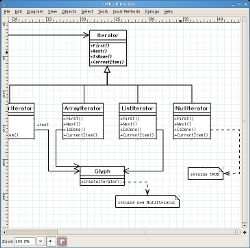
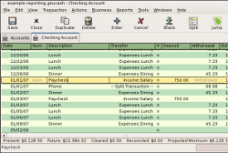
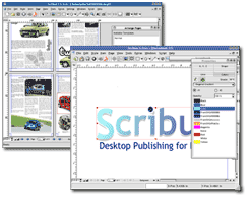

| Programa: | Dia 0.96 |
|---|---|
| Web del proyecto: | http://dia-installer.de/index_en.html |
| Instalador: | Instalar |
|  |
Dia es una aplicación gráfica de propósito general para la creación de diagramas, desarrollada como parte del proyecto GNOME. Está concebido de forma modular, con diferentes paquetes de formas para diferentes necesidades. Dia está disenado como un sustituto de la aplicación comercial Visio de Microsoft. Se puede utilizar para dibujar diferentes tipos de diagramas. Actualmente se incluyen diagramas entidad-relación, diagramas UML, diagramas de flujo, diagramas de redes, diagramas de circuitos eléctricos, etc. Se pueden anadir nuevas formas, dibujándolas con un subconjunto de SVG e incluyéndolas en un archivo XML. El formato para leer y almacenar gráficos es XML (comprimido con gzip, para ahorrar espacio). Puede producir salida en los formatos EPS, SVG y PNG. También conviene recordar que Dia, gracias al paquete dia2code, puede generar el esqueleto del código a escribir, si utilizáramos con tal fin un UML. |
| Programa: | GNUCash 2.2.9 |
|---|---|
| Web del proyecto: | ttp://www.gnucash.org/es/ |
| Instalador: | Instalar |
|  |
GnuCash es un sistema de finanzas personal en software libre que utiliza "doble entrada", que pretendía inicialmente desarrollar capacidades similares a las de Quicken de Intuit. La evolución actual está más próxima a desarrollar herramientas para pymes. Sus características principales incluyen: - Contabilidad por partida doble - Transacciones programables - Características para la contabilidad de Pequeños Negocios. - Posibilidad de Importar: OFX y QIF - Soporte multiusuario de SQL (Limitado) - Manejo de transacciones multi-divisas. - Portafolios de Fondos de Valores / Mutualistas - Cotizaciones en linea de Fondos de Valores y Mutualistas de inversión |
| Programa: | OpenOffice 3.0.1 |
|---|---|
| Web del proyecto: | http://es.openoffice.org/ |
| Instalador: | Instalar |
|
OpenOffice.org es una suite ofimática de software libre y código abierto de distribución gratuita que incluye herramientas como procesador de textos, hoja de cálculo, presentaciones, herramientas para el dibujo vectorial y base de datos. Está disponible para muchas plataformas como Microsoft Windows y sistemas de tipo Unix con el Sistema X Window como GNU/Linux, BSD, Solaris y Mac OS X. OpenOffice está pensado para ser altamente compatible con Microsoft Office, con quien compite. Soporta el estándar ISO OpenDocument con lo que es fácil el intercambio de documentos con muchos otros programas, y puede ser utilizado sin costo alguno. |
| Programa: | Scribus 1.3.3.13 |
|---|---|
| Web del proyecto: | http://www.scribus.net/ |
| Instalador: | Instalar |
|  |
Scribus es una herramienta de publicación comparable a Adobe PageMaker, PagePlus, QuarkXPress y Adobe InDesign. Scribus está disenada pensando en ser muy flexible, y en su capacidad de generar archivos compatibles con sistemas de impresión profesional. Adicionalmente, puede crear documentos PDF interactivos. |